Node-REDとPLC(三菱)との連携を試します。
プログラマブルロジックコントローラ(PLC)は、工場などのFA機器だけでなく、エレベーター、自動ドアなど、様々な機械の制御に使用されている小型のコンピュータの一種です。
PLCのプログラミングは、ラダー図を使って作成します。三菱の場合、GX Worksというソフトを使います。
このプログラミングの操作や表示を行うためのGUIは、一般的にはGOTと呼ばれるタッチパネル機能付きの表示器を使います。
ただし、値段もそこそこかかりますし、24V電源も必要なのでかさばります。
そこで、Node-REDにおけるmcprotocolモジュール(通信用)とdashboadモジュール(表示用)を使って、連携してみます。これで、GX Worksの入ったPC1台でPLCを制御することが可能になります。
「PLC」の設定(その1) -> 「Node-RED」の設定(その2)という順番で説明していきます。
「PLC」の設定
GX Worksは非常に多機能なので、詳しくは他サイトでインストール方法や使い方を勉強してください。ここではかいつまんで説明します。
まず、PLCとGX WorksのインストールされたPCをUSBでつなぎます。PLCには「Q03UDV」を使いました。
GX Worksを立ち上げます。プロジェクトの新規作成は設定が大変なので、PLCから設定を読み取ります。
GX Worksを起動し、「PC読取」ボタンをクリックします。
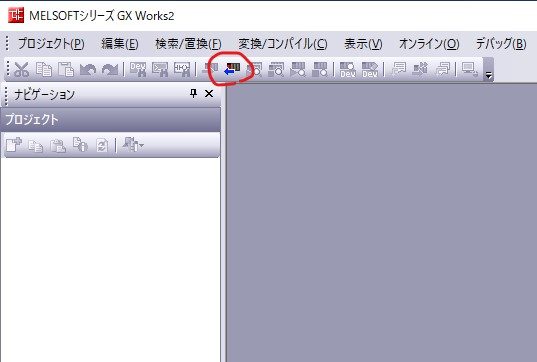
「PCシリーズ選択」ダイアログにおいて、「QCPU(Qモード)」を選択して、OKを押します。
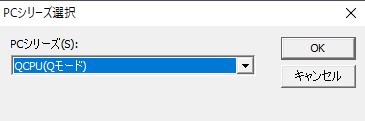
「接続先設定」ダイアログにおいて、下図のように選択されていることを確認し、OKを押します。
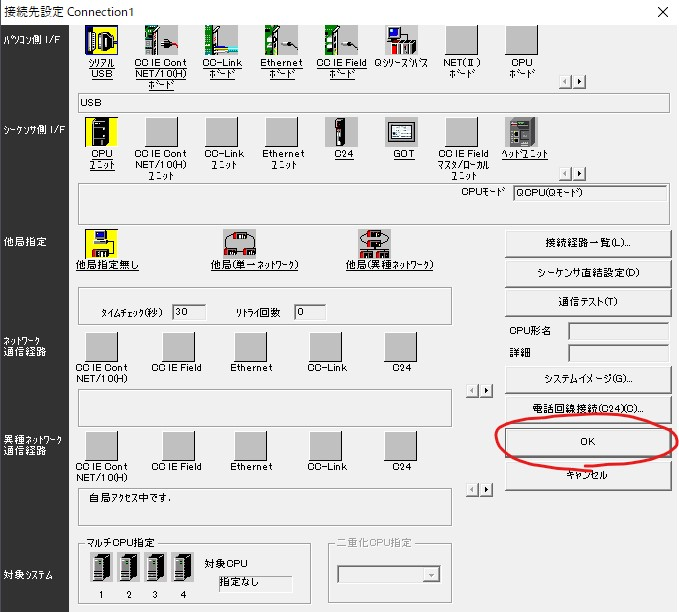
「オンラインデータ操作」ダイアログにおいて、「読出」 -> 「全選択」 (今回の例ではプログラムはチェックOFF。ラダーは1から作ります。) -> 「実行」。
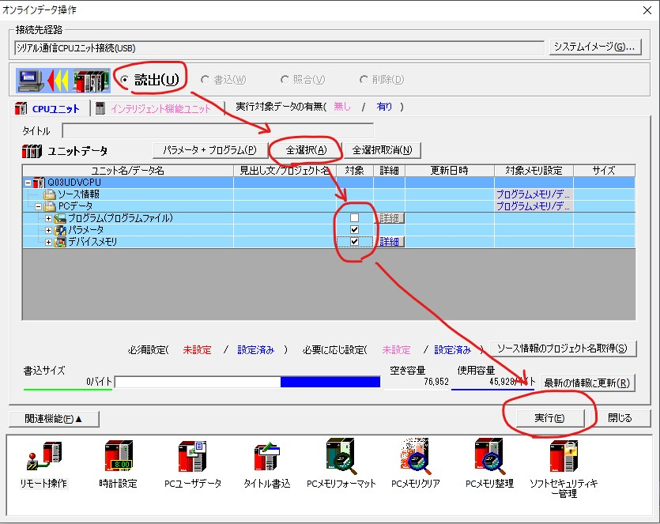
読み込みが完了したら、プロジェクトの「パラメータ」 -> 「PCパラメータ」。以下、IPアドレスなどの通信設定やプログラムの登録を行います。
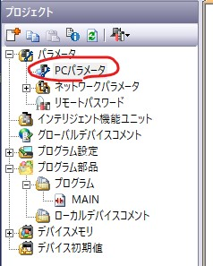
「内臓Eathernetポート設定」タブ -> PLCのIPアドレス設定 -> 更新データコード設定(今回はバイナリコード交信) -> 「オープン設定」ボタン
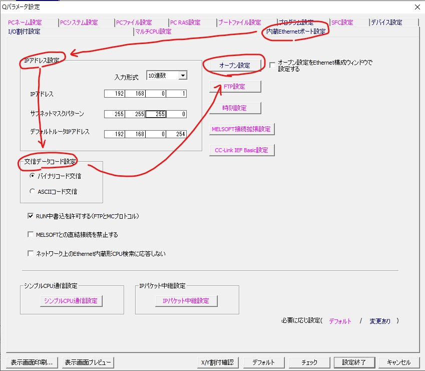
「内臓Eathernetポート設定 オープン設定」において、16個のうちの一つにNode-RED用の設定を行います。(1と16は空けておくのが良いです)
- プロトコル
- UDP
- オープン方式
- MCプロトコル
- 自局ポート番号
- 今回の例では4000
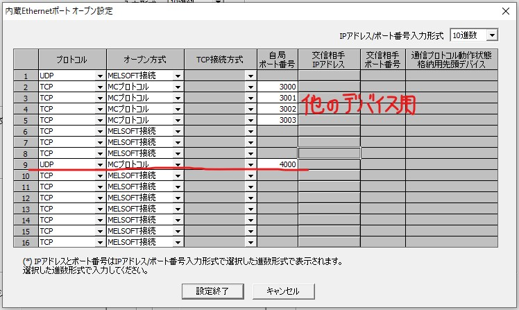
「プログラム設定」タブ -> 左側の「MAIN」を選択 -> 右側の表の1行目を選択 -> 「挿入」ボタン -> 「設定終了」ボタン
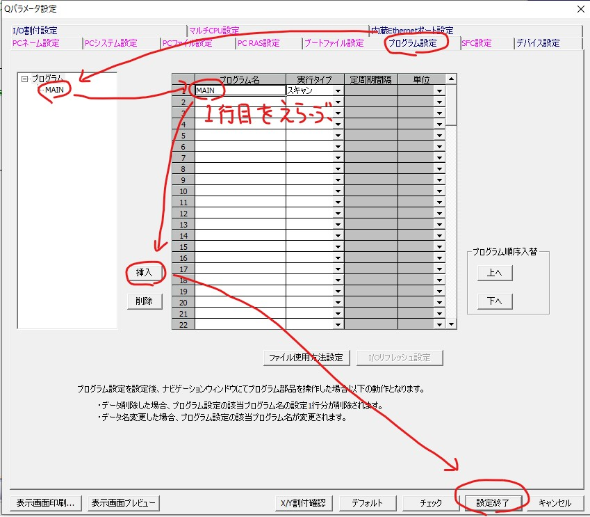
GX Worksを扱う上で、デバイスコメントは非常に重要な機能です。 コメントしておかないと、同じデバイスを他の用途に使ってしまうという凡ミスをしかねません。
また、QCPUの特殊デバイス（常時ONや常時OFFなど）のデバイスコメントを登録しておくと何かと便利です。
をローカルPCに保存して、GX Worksのプロジェクトの「グローバルデバイスコメント」を右クリックし、「CSVファイルからの読出」を実行してください。特殊デバイスのデバイスコメントの一部が登録されます。
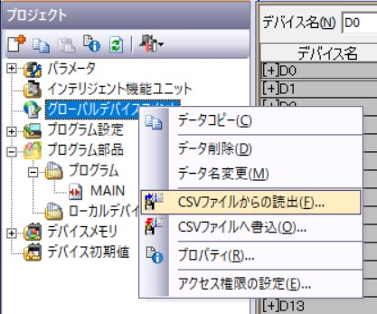
次に、以下のようにラダーを作成します。M0とD0に値を書き込むラダーです。(編集方法は、他のサイトを参照してください)
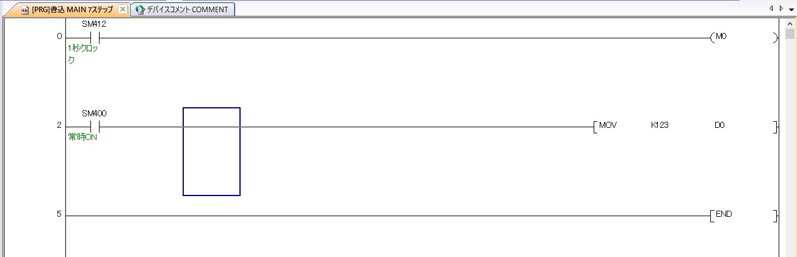
「PC書込」を行ってください。今回は「全選択」して、「実行」で問題ありません。
(デバイスコメントをリッチに登録するとあっさりとメモリーオーバーします。その時は、デバイスコメントのチェックはOFFにします。)
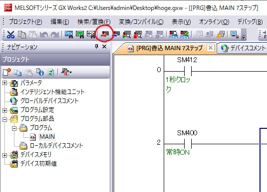
ラダーの変更については、STOP -> RUNで更新されますが、
IPアドレスなどを変更した時は、電源をOFFにして再起動しないと更新されません。
ここまででPLCの設定は完了です。
「その2」に続きます。